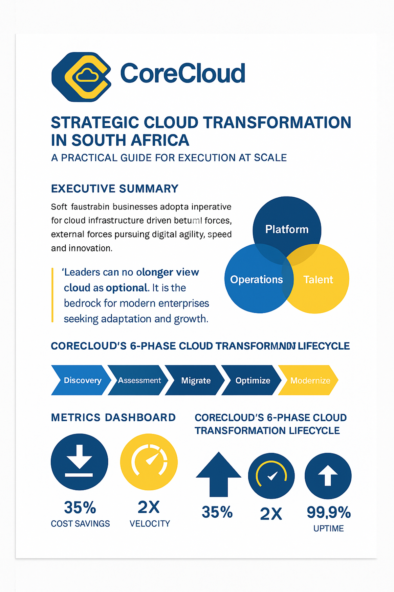
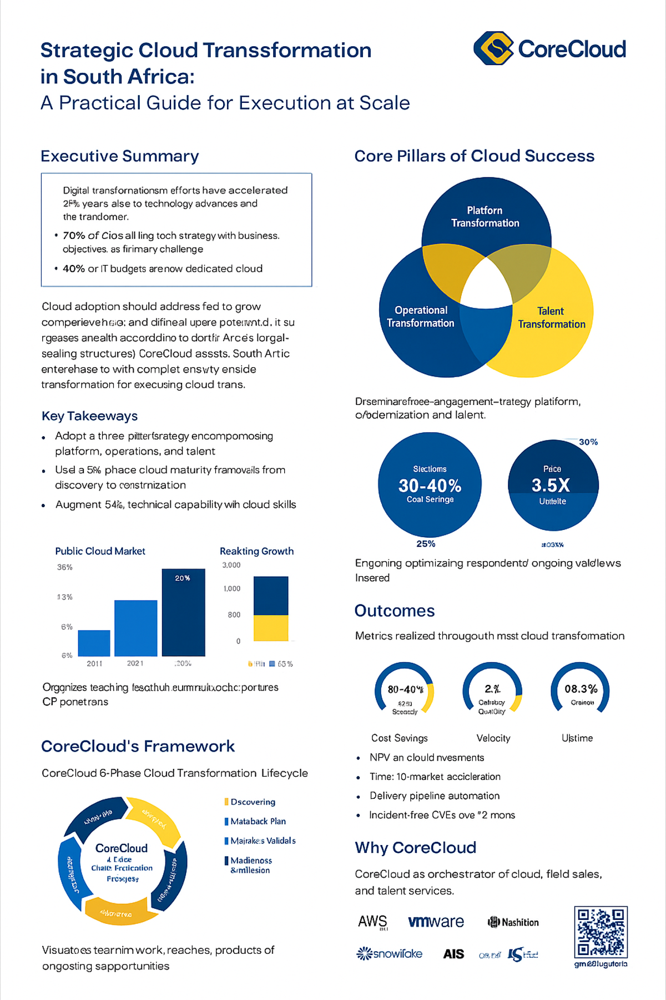

Strategic Cloud Transformation in South Africa
Executive Summary
This white paper provides a structured, partner-enabled framework for navigating cloud transformation at scale. We explore the challenges South African enterprises face and outline a 6-phase approach to AWS migration, modernization, and workforce alignment — all under CoreCloud’s orchestrator model.
Core Transformation Lifecycle

Strategic Pillars
